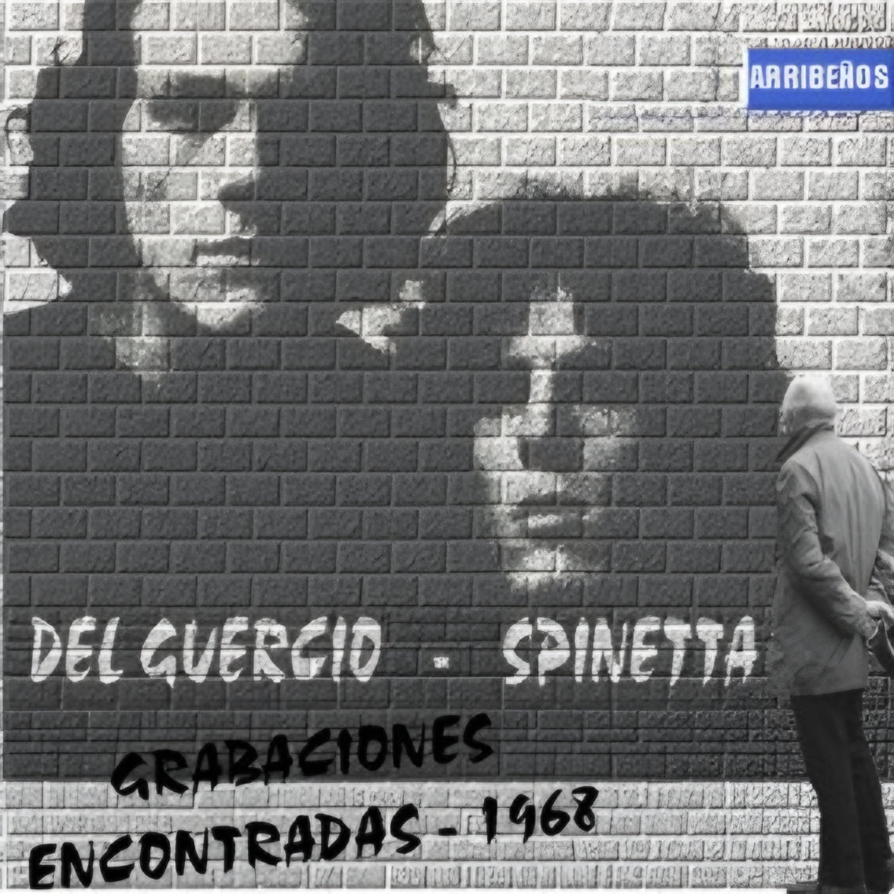

1968 - Buenos Aires, Argentina

A fines de los años sesenta, en una Buenos Aires donde el rock en español apenas comenzaba a tomar forma, un grupo de jóvenes músicos ensayaba canciones en casas, radios y pequeños escenarios. Entre ellos estaban Luis Alberto Spinetta y Emilio del Guercio, quienes pronto formarían parte de una de las bandas fundacionales del rock argentino: Almendra.
De aquella etapa temprana sobreviven algunas grabaciones caseras y registros informales. El material suele aparecer bajo el título “Grabaciones encontradas – 1968”, un bootleg que reúne interpretaciones tempranas de canciones que luego formarían parte del repertorio clásico. Estas versiones muestran diferencias notables respecto de las grabaciones oficiales: tempos distintos, arreglos desnudos y variaciones en las letras.
Particularmente interesante es el misterio de “Hombre de luz”. A diferencia de la grabada en 2008 (con letra de su padre), esta versión de los sesenta es una composición distinta vinculada a la estética psicodélica de la época.
Material difundido con fines culturales y de preservación histórica.